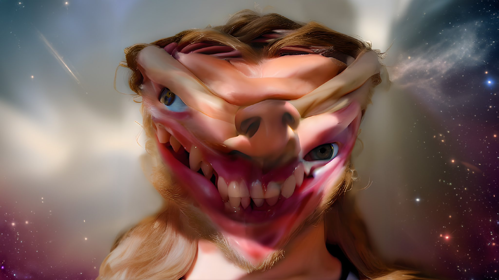

In the late 1980s, James became involved in the Cornish free party scene, putting on raves at "secret coves along the coast and behind sand dunes". The first party he DJed at was in a barn in 1988. Parties were also known to take place at Gwennap Pit. They mainly attracted local youths and travellers, with entrance donations taken in cannabis. The tight-knit community would also put on nights at small clubs in towns around the county, including St. Ives, Porthtowan, and St Austell. James would later refer to this scene as the "best he's ever been involved in". James started a regular DJ slot in 1989, playing alternate weeks at the Bowgie nightclub in Crantock. There he met Tom Middleton and Grant Wilson-Claridge. Impressed by James's music, Middleton played a tape James had given him to a free party organiser in Exeter, who eventually convinced James to release a record on his fledgling record label Mighty Force Records. James was initially resistant, but while he was tripping on acid backstage at a DJ gig, Darby and Middleton convinced him to release the record. Darby later said: "I think if he had not done that trip that night there may have never been any Aphex Twin." James has given a similar account: "...they made me sign the contract when I was off my face. I was tripping and they're waving this money and a pen at me. It's a bit clichéd but it's the way they got me to sign." Similarly impressed by James's music, Wilson-Claridge suggested they use some money he inherited to create a record label to release it. He and James founded Rephlex Records in 1991. James's first release was the 12" EP Analogue Bubblebath, released on Mighty Force in September 1991. The EP made the playlist of Kiss FM, an influential London radio station, giving it wide exposure in the dance music scene. In 2015, The Guardian called the release one of the key moments in the history of dance music. The record caught the ear of Renaat Vandepapeliere, the head of R&S Records, at that time one of the leading European rave labels. James visited him in Belgium, bringing with him a box full of cassettes of his music. From these cassettes they picked out tracks for two records, including James's first album Selected Ambient Works 85-92. In 1992, as word of his 12" records spread, James started performing at London techno events like the formative club Knowledge, held at the SW1 nightclub in London's Victoria, and the influential night Lost. Through 1991 and 1992, James released three Analogue Bubblebath EPs, two EPs as Caustic Window, the Red EP as part of the Universal Indicator collective, along with the Digeridoo and Xylem Tube EPs on the R&S label. Although he moved to London to take an electronics course at Kingston Polytechnic, he admitted to David Toop that his electronics studies were slipping away as he pursued a career in electronic music.
The first full-length Aphex Twin album, Selected Ambient Works 85–92, comprised material dating back to James's teen years. It was released in November 1992 by Apollo Records, a subsidiary of Belgian label R&S. John Bush of Allmusic would later describe the release as a watershed moment in ambient music. In a 2002 Rolling Stone record review Pat Blashill noted that Aphex Twin had "expanded way beyond the ambient music of Brian Eno by fusing lush soundscapes with oceanic beats and bass lines," demonstrating that "techno could be more than druggy dance music". Writing for Pitchfork in 2002, David Pecoraro called it "among the most interesting music ever created with a keyboard and a computer". DJ Mag's Ben Murphy named it "a seminal record in the IDM, ambient and experimental canon". In 1992, James also released the EPs Digeridoo and Xylem Tube EP as Aphex Twin, the Pac-Man EP (an album of remixes of Pac-Man music) as Power-Pill, two of his four Joyrex EPs (Joyrex J4 EP and Joyrex J5 EP) as Caustic Window, and Analogue Bubblebath 3. "Digeridoo" reached #55 on the UK Singles Chart, and was later described by Rolling Stone as foreshadowing drum and bass. That year, he also appeared as the Dice Man on the Warp Records compilation Artificial Intelligence with the track "Polygon Window;" the compilation would help birth the genre later known as "intelligent dance music" and help launch the career of Aphex Twin alongside Autechre and Richie Hawtin. In 1993, there followed his first releases on Warp: Surfing on Sine Waves (the second entry in the label's Artificial Intelligence series) and the EP Quoth, as Polygon Window, and later in the year the "On" EP, which entered the top 40 on the UK charts. Rephlex also put out an EP by James under the alias Bradley Strider, Bradley's Robot, and two more Caustic Window records. James was part of several tours in 1993. He supported the Orb on several dates, and joined the "Midi Circus" tour at venues across the UK, co-headlining with Orbital, the Orb and Drum Club. Later in the year, he was part of the NASA "See the Light" tour with Orbital, Moby, and Vapourspace at venues across the United States. Warp released the second Aphex Twin album, Selected Ambient Works Volume II, in 1994, which explored a more ambient sound, inspired by lucid dreams and James's experience of synaesthesia. It reached number 11 in the UK charts, but was not particularly well received critically; critic Simon Reynolds later noted that "many in the Aphex cult were thrown for a loop" and that "Aphex aficionados remain divided". Other 1994 releases were a fourth Analogue Bubblebath, GAK (derived from early demos sent to Warp), and Classics, a compilation album.
For his charting 1995 album ...I Care Because You Do, composed between 1990 and 1994 in a range of styles, James used an image of his face for the cover, which became a motif on his later releases. He commissioned Western classical-music composer Philip Glass to create an orchestral version of the ...I Care Because You Do track "Icct Hedral", which appeared on the Donkey Rhubarb EP. In the same year, James released his Hangable Auto Bulb EP under the name AFX, which spearheaded the short-lived drill 'n' bass style. Richard D. James Album, James's fourth studio album as Aphex Twin, was released on Warp in 1996. It features software synthesisers and unconventional rhythms. Will Hermes of Spin discussed James's use of jungle elements, writing that "by applying junglist strategies to his own obsessive sound creation - his gorgeous weirdo palette of modernist strings, whirring crib toys, and agitated machines - he remakes drum'n'bass in his own image". In a Pitchfork list of the best albums of the 1990s, Eric Carr wrote that Richard D. James Album demonstrated "aggressive combinations of disparate electronic forms", with an "almost-brutal contrast between its elements" that has ensured its relevance. In 2003, NME named it the 55th greatest album of all time, and in 2009 Pitchfork named it the 40th greatest album of the 1990s. James garnered attention the following year after the release of his charting Come to Daddy EP. The title track was conceived as a death metal parody. Accompanied with a successful music video directed by Chris Cunningham, James became disenchanted by its success: "This little idea that I had, which was a joke, turned into something huge. It wasn't right at all." It was followed by "Windowlicker", a charting single[75] promoted with another Cunningham music video, nominated for the Brit Award for Best British Video in 2000.
In 2001 Aphex Twin released Drukqs, an experimental double album featuring abrasive, meticulous programming and computer-controlled piano influenced by Erik Satie and John Cage. It features the piano composition "Avril 14th", which remains perhaps James's best known work. The album polarised reviewers. James told interviewers he had accidentally left an MP3 player with new tracks on a plane, and had rushed the album release to preempt an internet leak. In 2001, James also released a short EP, 2 Remixes By AFX, with remixes of songs by 808 State and DJ Pierre. It also had an untitled third track, consisting of a SSTV image with high-pitched sounds which can be decoded to a viewable image with appropriate software. In 2002, James was nominated for the Brit Award for Best British Male. In 2003, Warp released 26 Mixes for Cash, collecting many of James's remixes for other artists. In 2005, James released a series of vinyl EPs under the AFX name, Analord, created entirely with analogue equipment. These were followed in 2006 by a compilation album of Analord tracks, Chosen Lords. In 2007, James released two records on Rephlex, Confederation Trough and Rushup Edge, under the alias the Tuss, Cornish slang for "erection". Media sources speculated about James's involvement, but his identity was not confirmed until 2014. In 2009 Rephlex Records released digital versions (in the FLAC file format) of the 11 Analord EPs. Each of them (except for Analord 10) had bonus tracks, totalling 81 minutes of new music between them all. Richard later disbanded Rephlex Records, removing the website entirely. This same year, James began working with the visual artist Weirdcore for graphics for his live shows, debuting at Bloc Festival in Minehead. Weirdcore has continued to work with James on live graphics and music videos. In 2010 James said he had completed six new albums, including a new version of the unreleased Melodies from Mars. In September 2011, he performed a live tribute to the Polish composer Krzysztof Penderecki; he performed his remix of Penderecki's "Threnody to the Victims of Hiroshima" and a version of "Polymorphia". The following month, he performed at the Paris Pitchfork Music Festival.
In 2014, a test pressing of a 1994 album recorded under James's pseudonym Caustic Window appeared for sale on Discogs. The album was once intended for sale on James's label Rephlex, but went unreleased. With the consent of James and Rephlex, fans organised a Kickstarter campaign to purchase the record and distribute copies. Syro, the first album released under the Aphex Twin name since Drukqs in 2001, was released through Warp on 23 September 2014. It was marketed by a teaser campaign including graffiti, a blimp flown over London, and an announcement made via a .onion address accessible through the darknet browser Tor. In November 2014, James released a set of 21 tracks, Modular Trax, on the audio platform SoundCloud. The tracks were later removed. Over several months in 2015, James anonymously uploaded 230 demo tracks, some dating to the 1980s, to SoundCloud. He said he had released the demos to relieve his family of the pressure to release his archives after he dies. He has continued to occasionally release tracks on the account. On 23 January 2015, James released Computer Controlled Acoustic Instruments pt2, created with robotic instruments including the Disklavier, a computer-controlled player piano. On 8 July 2016, he released the Cheetah EP, backed by a music video for "CIRKLON3 [Колхозная mix]", the first official music video for an Aphex Twin track in 17 years. On 17 December, James performed in Houston, Texas at the Day for Night festival, his first American appearance in eight years. A 12-inch vinyl was sold exclusively at the festival, containing two 10-minute tracks, entitled Houston, TX 12.17.16 [Day For Night]. On 3 June 2017, James performed at the Field Day festival and released a limited edition EP, London 03.06.17. The performance was livestreamed on NTS Radio's Youtube channel. On 19 June 2017, a Michigan record store sold an exclusive Aphex Twin record comprising two tracks released on SoundCloud in 2015.
On 27 July, Aphex Twin opened an online store with expanded versions of previous albums and new tracks. On 29 July, at the Fuji Rock Festival, a tape limited to 500 copies was released. Aphex Twin released an EP, Collapse, on 14 September 2018. The EP was announced on 5 August in a garbled press release written in broken English and visually distorted with the same Aphex Twin 3D graphic found in London, Turin and Hollywood. A promotional video for the Collapse EP was to be broadcast on Adult Swim, but was cancelled after failing the Harding test. It was made available online instead, and the video for "T69 Collapse" was uploaded to YouTube. While on tour in September 2019, two 12-inch vinyls were released at two performances at Printworks, London, and Warehouse Project, Manchester, entitled "London" and "Manchester" on James' warp.net site. Official recordings of the sets were released on the 15th of September and 26th of December 2019 on Youtube. Speculations of James's return started after a mysterious website featuring the Aphex Twin logo inside of the word "London" was discovered by fans. Its title alluded to 19 August 2023, the same day that the Field Day festival takes place on in London, teasing a possible performance. His return was confirmed on 24 January 2023, when Aphex Twin was announced as a headliner for the festival. Over the next few weeks, several other performances were announced for Europe. At a performance at Sónar on 16 June, an exclusive 12-inch vinyl was released entitled Barcelona 16.06.23.[109] On 21 June, James announced the EP Blackbox Life Recorder 21f / In a Room7 F760, which was released on 28 July. On 19 August, James performed at Field Day and released another exclusive 12-inch vinyl entitled London 19.08.23. NTS Radio released a 360-degree video recording of the set on 27 August.[112] Again, on 2 September, at a performance at Forwards Bristol, a cassette combining the Barcelona and London releases was released entitled Bristol 02.09.23.